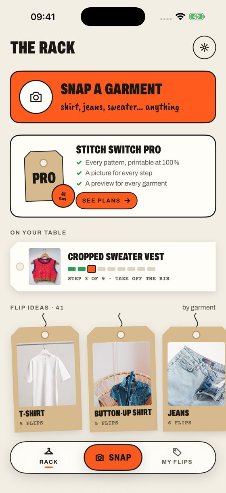
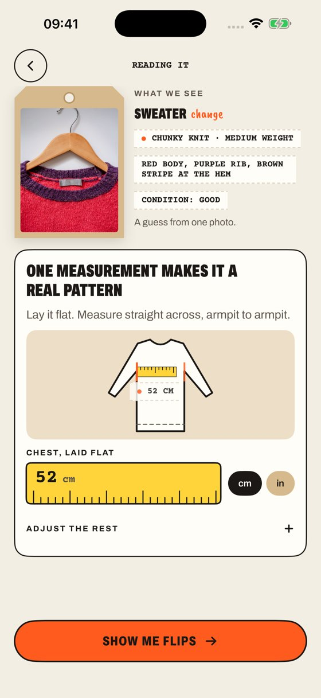
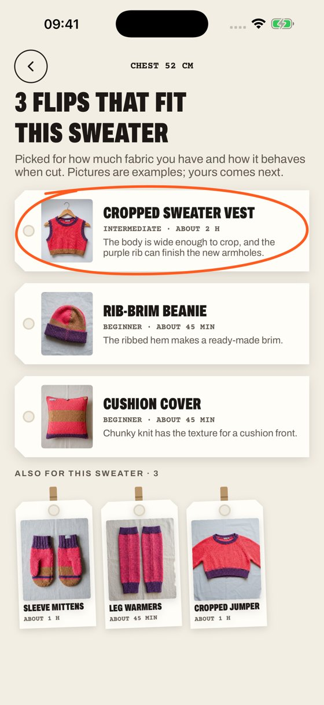
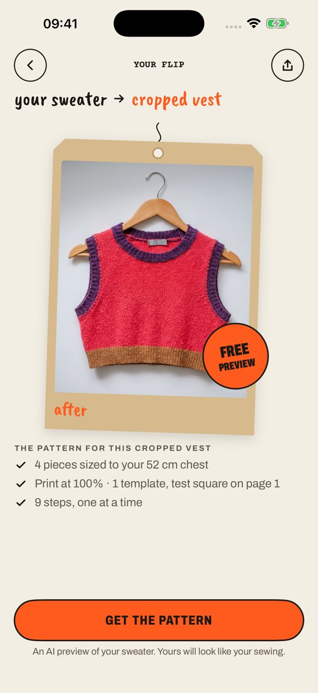
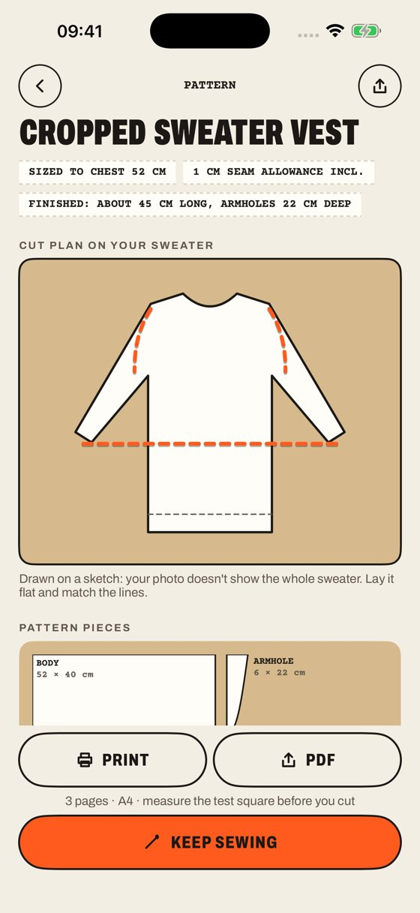
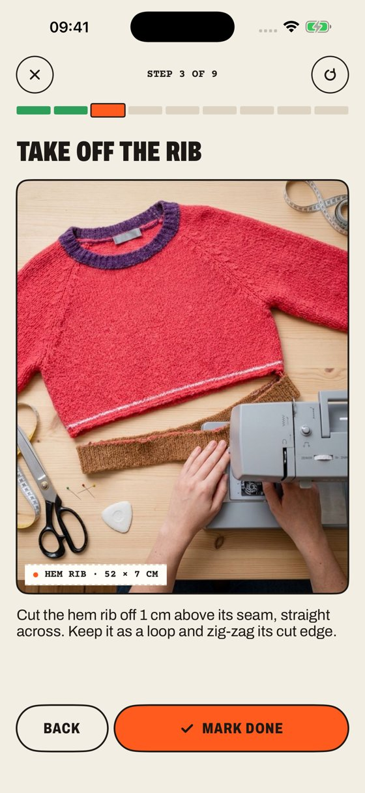
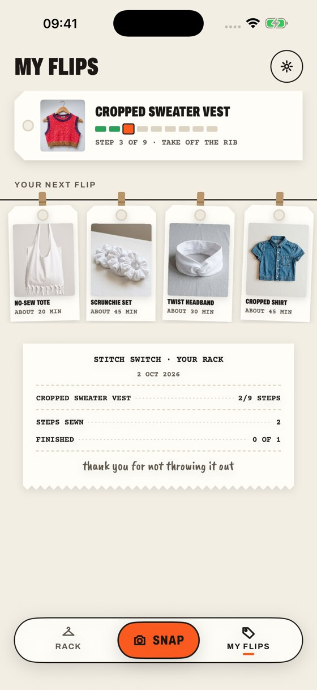

Your 20 screens, and how we build them together.
You designed the whole REWARE journey, from the first welcome to the last seam. This page walks through every screen and shows what already works today in Stitch Switch, what we adapt, and what we build new, in a clear order.
Aus Alt wird Neu, Schritt für Schritt.
Every screen, with its status
Tap a screen to see what exists today, what we build, and which phase it belongs to. The captions are yours, in German.
The heart of REWARE already runs
From the photo to the sized pattern and the step-by-step guide, Stitch Switch does this today, in the App Store. The AI only reads the photo and draws the pictures; the pattern itself comes from fixed drafting rules and the tape measurement, so the same garment and the same numbers always give the same pattern, and the person can correct the reading if the AI got it wrong. The rules were checked by computer over 3,936 measurement combinations; the pilot is their first test by a practitioner, which is why it comes first.
Real screens of the shipped app, shown here with the sample sweater. Under each one: the REWARE screens it covers.







In your very first test you saw that a shirt cut through front and back together, as one straight line, comes out shorter at the back once it is worn. Front and back need their own lines. That change goes into the next build of the drafting rules for every transformation that crops a top straight across both layers: the T-shirt, shirt, sweatshirt and sweater crops, the sweater vest and the dress top. This is how the pilot should work: you find what no computer check can see, and the rules are corrected in the next build.
Your app in front, the engine behind it
REWARE gets its own app, built in Flutter so that one codebase serves iPhone and Android. Reading a garment, drafting the pattern and drawing the pictures live in a service behind the app. The community layer is REWARE's own data. App and service are built as one product by one hand, so the measurement screens, the cut plan and the PDF all come from the same rules.
REWARE app
- Your 20 screens, in your design and in German
- iPhone and Android from one Flutter codebase
- Accounts, saved projects, profile (phase 2)
- Holds no AI keys; talks only to the REWARE service
REWARE service
- Garment reading from a photo
- Ideas that fit this garment, with the AI preview
- Drafting engine: 41 transformations, 9 garment types, sized to the measurements
- PDF at 100% with test squares, tiled when larger than the paper
- Step pictures of the person's own garment
- Today the engine lives inside the iOS app, and the AI key with it
- Phase 1 moves both behind a hosted service that REWARE owns, with budget caps you can see (the proxy is written, not yet deployed)
Community layer
- Tailors and ateliers near you, with contact details
- Juanita's Nähbox coaching and workshops
- Partner fabric shops
- Curated by you, shown by the app
The AI models behind reading and pictures are Google's and can be swapped; the data the app exchanges with the service (reading, measurements, pieces, steps) stays the same. Each AI picture costs a few cents at Google's list price, which matters for a one-time app price (question 2 below).
From phase 1 the Google AI, Apple, Google Play and hosting accounts are REWARE's and billed to REWARE at cost; during the pilot the usage runs on Stitch Switch. Accounts and projects live on a server in the EU, with REWARE as the data controller; photos go to the AI only for the seconds of the reading, on the paid business tier, and are not kept there.
Pilot first, then three phases
Each phase ends with something you can hold: a tested pattern, an app on your phone, a feature your community can use. The order follows your journey: the engine and the core screens first, the community around them second, the creative extras third.
0Pilot in your workshopReal garments, printed patterns, your judgementOctober 2026
What happens
- Five transformations, one garment each first; a second size where your October allows
- Print at 100%, measure the test square, cut and sew as instructed
- Score each run: print scale, pieces fit the garment, finished size, fit on the body, clarity for a beginner
What you get
- Free full access to Stitch Switch until 2 November 2026
- Corrections to the rules of the five pilot transformations in the next build, usually within the week
- A written summary of what worked and what changed
- For Creative Insights on 13 October: Stitch Switch running live on your phone and the demo videos made from your own garments. The REWARE app itself comes after the pilot.
What I need from you
- Garments and workshop time
- Your notes on every hesitation
- Photos of the finished pieces
- Anything beyond the five transformations goes into phase 1
What REWARE sets up now
- An Apple developer account (needs a D-U-N-S number; allow two to four weeks) and a Google Play developer account, both in REWARE's name
- A Google AI billing account and a code repository in REWARE's name
- I send step-by-step instructions for each
1Core: the REWARE app with the engine insideFrom "Jetzt geht's los" to "Anleitung & Schnittmuster"220–300 h
Deliverables
- Flutter app for iPhone and Android in your design
- German as the first language, English second
- The engine as a hosted service: reading, ideas, drafting, PDF, step pictures, with keys and budgets in REWARE's hands
- Body measurements saved once in a profile
- Conformance test: the service gives the same pieces and steps as the iOS app on the same 3,936-combination grid the catalogue was checked on
- Test builds on your phone every two weeks from the second month (TestFlight and Google Play internal test)
First month: a defined delivery
- The drafting engine answering as a service for the five pilot transformations, with a script that checks its pieces and steps match the iOS app
- The first REWARE screen in Flutter on an iPhone and an Android phone: photo in, reading out
- If it is not there, you can stop after the first month
Your part
- Final say on every screen's wording and design, within the twenty screens as drawn; a screen changed after it is built is new work, estimated before it starts
- Which ten transformations ship first
- Pattern review from the pilot
2Community: accounts, tailors, Nähbox, partnersThe part only REWARE can offer180–260 h
Deliverables
- Accounts and the REWARE community profile, on a server in the EU
- Tailors and ateliers near you: list, distance, contact details
- Juanita's Nähbox: coaching and workshop booking
- Partner fabric shops
- A simple admin page for tailors, partners and workshops
- The one-time purchase on both stores
- Web landing page with the store badges
- Projects saved to the account, "Meine Projekte"
Your part
- The lists of tailors, ateliers and partners you trust, before the phase starts
- How bookings should reach you (your calendar, a form, or in-app)
- AGB and privacy texts from your legal adviser
- Community rules
3Growth: ideas in words, combinations, your own designsWhere REWARE becomes creative160–240 h
Deliverables
- "Hast du schon eine Idee?": describe the wish in words or upload a sketch, and the app finds the closest tested transformation
- A first set of five combination designs (two or three garments into one), each with its own drafting rules
- Design adjustments: colours, details, fabric combinations, with a redrawn preview, within what the pattern rules allow
- Up to five of your own designs in the catalogue, with your name on them; further designs estimated per design
- A map for the tailors and partners
- My suggestion, not in your screens: an impact card after every finished piece, with water, CO₂, textile kept out of the bin, money and hours, from figures and sources you approve
Your part
- Designs you want in the catalogue
- Which wishes beginners most often bring to you
- The figures and sources you trust for the impact card
How fast do you want to go?
The work stays the same; the hours per month set the calendar. 40 hours a month is the pace in my proposal; more by agreement.
Estimates from the screens as drawn; refined after the pilot and after we agree the first ten transformations. The calendar assumes answers from your side within a week and the community lists before phase 2 starts. Changes to the screens or new features after the estimate are scoped and estimated separately. Phases can also run with a pause between them.
Your craft, my code, one product
What you bring
- Teaching people to make, repair and transform clothes since 2012
- The judgement that tells a good pattern from one that only looks right
- Your design for every screen, and the REWARE brand
- Graz: the tailors, the shops, the workshops, the community
What I bring
- The engine: 41 transformations, drafting rules, PDF at 100%, the AI pipeline, built and shipped in the App Store
- A way of working that corrects what you find in the next build
- Native iOS is my home. REWARE would be my first Flutter project; that is exactly why the first month proves the engine as a service and the first screen on both phones before you commit further
- We work in writing, English or German through translation, which is also why every decision has a record; for a meeting that must be spoken, a translator joins
The rhythm
Six questions that shape phase 1
None of these needs an answer today. They are the choices that change what we build first.